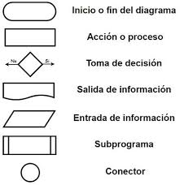

| ALGORITMOS |

Un diagrama de flujo, o flujograma, es una representación gráfica de la secuencia de pasos, actividades o decisiones que componen un proceso o algoritmo. Utiliza símbolos estandarizados (óvalos, rectángulos, rombos) conectados por flechas para mostrar la dirección del flujo de trabajo de manera ordenada, clara y concisa. YouTube YouTube +3 Aspectos Clave: Propósito: Visualizar un proceso de principio a fin, facilitando la comprensión, el análisis y la mejora de procedimientos. Componentes: Símbolos geométricos que representan acciones (proceso), decisiones, inicio/fin, y entradas/salidas de datos. Uso: Ampliamente utilizado en programación (algoritmos), gestión de proyectos, procesos industriales y documentación empresarial. Miro Miro +4 Simbología Básica: Óvalo (Inicio/Fin): Representa el punto de partida o término del proceso. Rectángulo (Proceso): Representa un paso o acción específica. Rombo (Decisión): Indica un punto donde se debe tomar una decisión (sí/no) que ramifica el flujo. Flechas (Líneas de flujo): Conectan los símbolos y muestran la secuencia u orden de los pasos. YouTube YouTube +4 Ventajas: Sustituye descripciones extensas por un modelo visual rápido de entender. Ayuda a identificar problemas, cuellos de botella o pasos innecesarios. Estandariza procedimientos para mejorar la productividad.